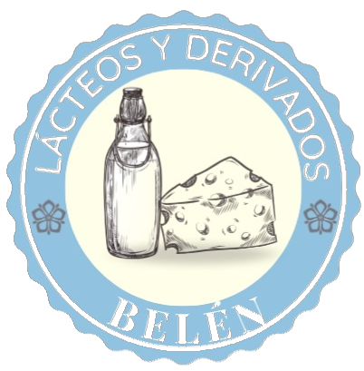

Inicio
Productos
Recetas
Contacto
Nosotros
Cuenta de usuario
Iniciar sesión
Registrarse
Ayuda
0
Inicio
Productos
Recetas
Contacto
Nosotros
Cuenta de usuario
Iniciar sesión
Registrarse
Ayuda
0
Recetas con queso Jocoque
Regresar
Gelatina de frutos rojos con queso jocoque
INGREDIENTES
5 porciones
Tiempo: 30 minutos
1 taza de frutos rojos (zarzamora, fresa y moras)
420 ml de crema para batir
750 ml de queso jocoque
4 cdas de grenetina sin sabor
1 taza de agua
MODO DE PREPARACIÓN
En la taza de agua hidratamos la grenetina, para hidratarla se diluye en agua fria y despues se derrite en el microhondas por 10 segundos
En la licuadora agregamos la crema batida, el queso jocoque , lso frutos rojos y la grenetina hidratada
Vierte la mezcla en moldes y refrigera hasta que cuaje
Desmolda y disfruta.
Ensalada de betabel con jocoque
INGREDIENTES
3 porciones
Tiempo: 40 minutos
1/2 k betabel
1 taza de jocoque
2 tazas de espinaca
1 taza de almendras picadas
1cda de miel
MODO DE PREPARACIÓN
Pela el betabel y hornea 40 por 180 grados hasta que esté suave.
Listo el betabel saca del horno y deja enfriar, en una tabla cortalo en rebanadas
En una tabla pica la espinaca previamente lavada y desinfectada.
En recipinete coloca una cama de espinaca, seguido por el betabel corona con queso jocoque, almendra y miel
Sirve y disfruta
Humus con jocoque
INGREDIENTES
4 porciones
Tiempo: 40 minutos
100 gr garbanzo remojado un día antes
100 gr pasta de ajonjolí o ajonjolí molido
150 ml jocoque líquido
100 ml limón
40 gr dientes de ajo
100 ml aceite de oliva
40 gr hierbabuena
40 gr perejil
Al gusto Paprika
Al gusto Sal
Pan pita
1l de agua
MODO DE PREPARACIÓN
En una olla express ponemos los garbanzos que remojamos previamente una noche antes, y revisamos que se cocinen a la perfección.
En la licuadora vertemos los garganzos cocidos con un poco del agua de la cocción
Agrega el queso jocoque junto con la pasta de ajonjolí y al ajo molido
Agrega el aceite de oliva y el jugo de limón, licua hasta que quede una mezcla homogénea
Sirve en un plato y adorna con perejil, hierbabuena picada, sal y paprika al gusto.
Disfruta con pan pita o galletas